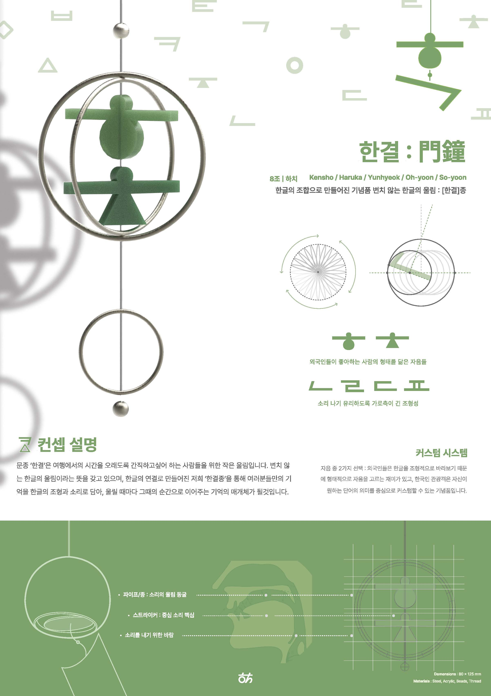

한결종（ハンギョベル）
Group8 하치（はち）
"한결종(Hangyeo-bell)" is a small resonance created for people who wish to cherish and prolong their time spent traveling.
It is a gentle sound for those they hold dear.
Carrying the meaning of unchanging Hangul resonance, Hangyeo-bell is born from a combination of Hangul characters.
Through this form, it envelops memories of travel in the shapes and sounds of Hangul, becoming a medium that reconnects each ring to that moment in time.